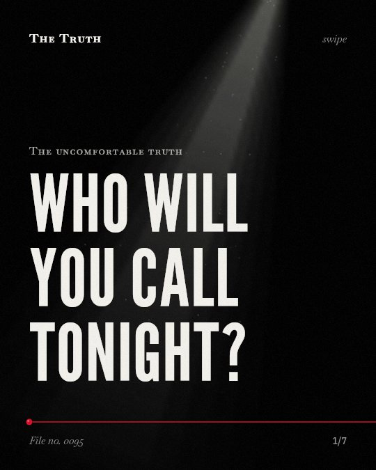

The uncomfortable truth
Who will you call tonight?

Poor social relationships are as deadly as light smoking.
Research shows the risk of mortality from poor social relationships is similar to the risk from light smoking. It also exceeds the risks from hypertension and obesity.
Established. Several studies combined, or official data. The evidence backs this.
What the research found
The risk of mortality for having poor social relationships is similar to the risk from light smoking and exceeds the risks from hypertension and obesity.
“the overall odds for mortality was 1.50, similar to the risk from light smoking and exceeding the risks conferred by hypertension and obesity.”
Meta-analysis, 2016. Holt‐Lunstad & Smith, Heart.
Social deficits are more predictive of death in samples with an average age younger than 65 years.
“Results also differ across participant age, with social deficits being more predictive of death in samples with an average age younger than 65 years.”
Meta-analysis, 2015. Holt-Lunstad et al., Perspectives on psychological science : a journal of the Association for Psychological Science.
Living alone is linked to a 32% increased likelihood of mortality.
“loneliness OR = 1. 26, and living alone OR = 1. 32, corresponding to an average of 29%, 26%, and 32% increased likelihood of mortality, respectively.”
Meta-analysis, 2015. Holt-Lunstad et al., Perspectives on psychological science : a journal of the Association for Psychological Science.
Participants with stronger social relationships have a 50% increased likelihood of survival.
“the random effects weighted average effect size was OR = 1. 50 (95% CI 1. 42 to 1. 59), indicating a 50% increased likelihood of survival for participants with stronger social relationships.”
Meta-analysis, 2010. Holt-Lunstad et al., PLoS Medicine.
Social isolation is linked to a 1.35 hazard ratio for mortality in older adults.
“Similar associations were found for social isolation (HR 1. 35, 95% CI 1. 27-1. 43) and living alone (HR 1. 21, 95% CI 1. 13-1. 30).”
Meta-analysis, 2025. Nakou et al., Aging Clinical and Experimental Research.
Isolation changes your physical survival.
Living alone is linked to a 32% increased likelihood of mortality. In older adults, social isolation is linked to a 1.35 hazard ratio for mortality.
Your social circle is a health metric.
That may be why your connections are as vital as your blood pressure. Having stronger social relationships is linked to a 50% increased likelihood of survival.
This part is our reading of the evidence, not a finding.
The dinner table.
You sit in a quiet kitchen at night. You eat alone while the television provides the only noise in the room.
The honest summary
The evidence consistently shows that poor social relationships and isolation are significant predictors of mortality across various demographics and health conditions.
The evidence is subject to variability and heterogeneity across studies, with some findings showing large methodological differences and potential publication bias.
Who will you call tonight?
Sources
- Holt-Lunstad J, Smith TB, Layton JB (2010). Social Relationships and Mortality Risk: A Meta-analytic Review. PLoS Medicine. Meta-analysis, cited 7,221 times.
- Agni Nakou, Elena Dragioti, Nikolaos Stefanos Bastas et al. (2025). Loneliness, social isolation, and living alone: a comprehensive systematic review, meta-analysis, and meta-regression of mortality risks in older adults. Aging Clinical and Experimental Research. Meta-analysis, cited 100 times.
- Julianne Holt‐Lunstad, Timothy B. Smith (2016). Loneliness and social isolation as risk factors for CVD: implications for evidence-based patient care and scientific inquiry. Heart. Meta-analysis, cited 256 times.
- Holt-Lunstad J, Smith TB, Baker M, Harris T, Stephenson D (2015). Loneliness and social isolation as risk factors for mortality: a meta-analytic review. Perspectives on psychological science : a journal of the Association for Psychological Science. Meta-analysis, cited 5,982 times.
Also read for this file, not quoted
- Long et al. (2022). Loneliness, Social Isolation, and Living Alone Associations With Mortality Risk in Individuals Living With Cardiovascular Disease: A Systematic Review, Meta-Analysis, and Meta-Regression.
- Meng et al. (2024). The impact of social relationships on the risk of stroke and post-stroke mortality: a systematic review and meta-analysis.
This file was researched and drafted by software, then checked by rules a model cannot talk its way around: each quote above was matched word for word against the paper, and every number had to appear in it. How files are made.